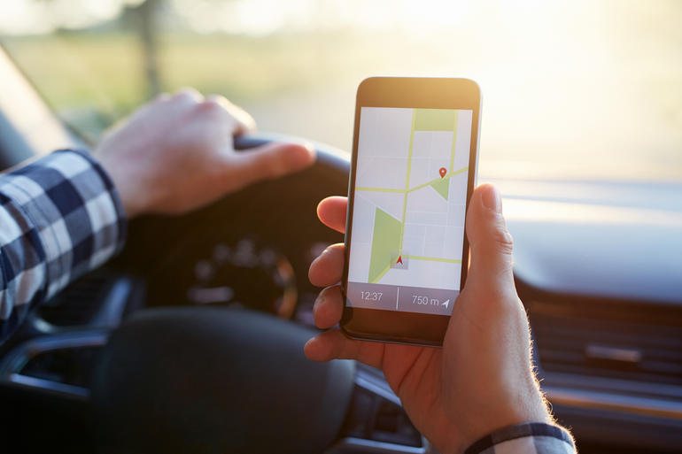

<ion-header>
  <ion-navbar>
    <ion-title align="center">Articar</ion-title>
  </ion-navbar>
</ion-header>

<ion-content class="card-background-page" padding>
  <h2 align="center">Bem vindo ao</h2><h1 align="center"><b>Articar</b>!</h1>
  <p align="center">
    Um computador de bordo, na palma das suas mãos.
  </p>
  <br>
  <br>
  <br>
  <br>
  <br>
  <br>
  <br>
  <br>
 <ion-card>
    
    <div class="card-title">O ajudante</div>
    <div class="card-subtitle">que cabe no seu bolso</div>
  </ion-card>
</ion-content>
